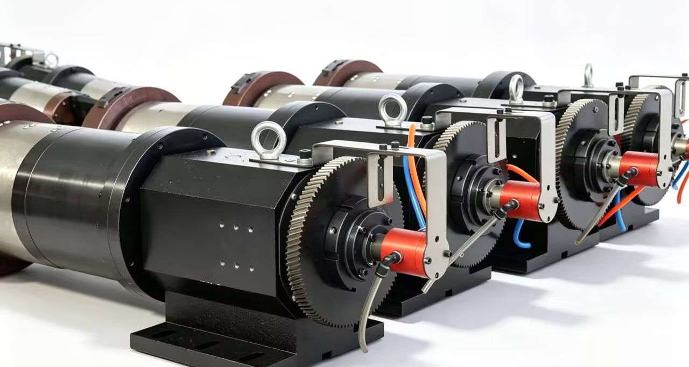

Пример применения
Задние патроны станков лазерной резки труб
BP-3P-0004 и BP-2P-08-0001 применяются для подачи сжатого воздуха к задним патронам станков лазерной резки труб. Число каналов и интерфейс выбираются под конструкцию патрона.
Для технологических или вспомогательных газов требуется отдельное решение. Сообщите газ и условия работы — мы проверим материалы, чистоту и испытания.
Стандартные модели, применяемые для подачи сжатого воздуха к заднему патрону: BP-3P-0004 и BP-2P-08-0001 для станков лазерной резки труб.
Фотография показывает тип применения; точная модель на снимке не определена.
Посмотреть применение